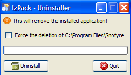
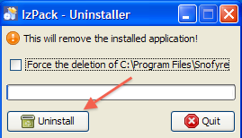
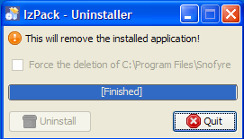
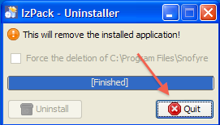

SNOMED CT, Java and MySQL are registered trademarks
This task describes the steps for uninstalling Snofyre from a client machine.
- Ensure Snofyre is not running.
- Navigate to Snofyre's Installation folder
- Navigate to Uninstaller folder located in the Installation folder.
-
Start uninstallation by running the Snofyre-Uninstaller.jar file in this folder.
You can run the Snofyre-Uninstaller.jar by doubling clicking the file.
This displays a dialog as shown below.

-
Click the Uninstall button shown below.

This will start the uninstallation process and display progress as shown below.
-
Once uninstallation has been completed, you'll be shown a Finished message as shown belo

-
Once uninstallation has been completed, you'll be shown a Finished message as shown below.
-
Click the Quit button shown below to dismiss the Uninstaller.

Snofyre should now have been uninstalled from the client machine.
Important: On Windows, Snofyre's Installation folder might not be deleted, even when you choose force delete of Installation folder. It might still contain the Snofyre-Uninstaller.jar. If this happens, you can safely delete Snofyre's Installation folder and all its content.